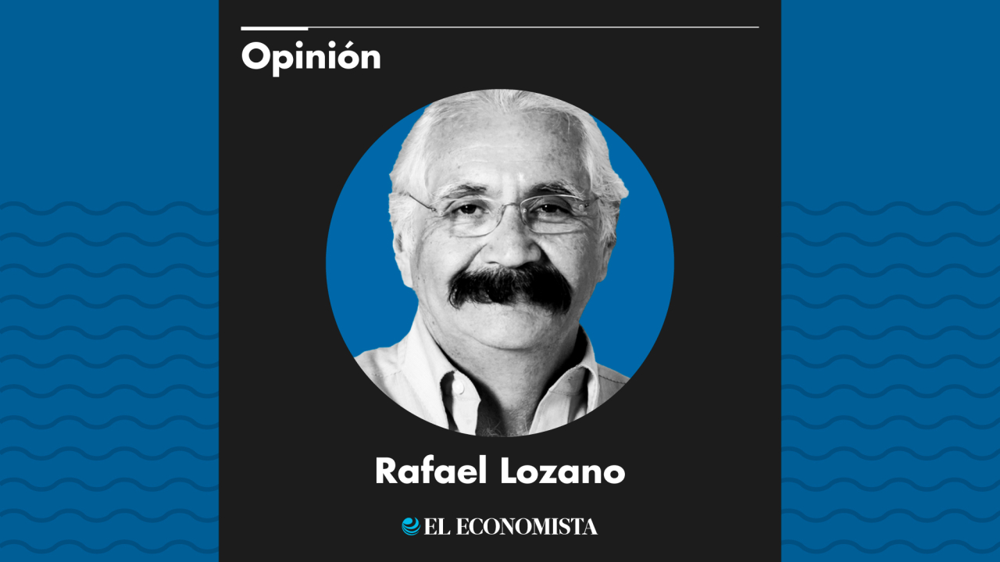
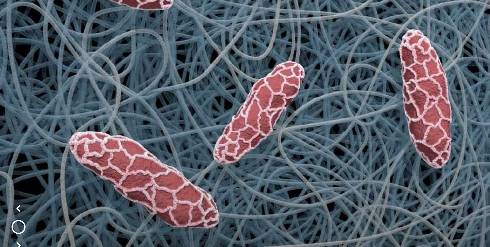

Noticias por Salud Digital

Salud digital en México: el vacío legal que frena su desarrollo tecnológico.
06 de febrero, 2025

La OMS sigue dando de qué hablar.
09 de febrero, 2025
DeepSeek hizo que me saltaran las lágrimas: los jóvenes chinos que buscan terapia en la inteligencia artificial.
13 de febrero, 2025
Los chatbots de IA, como DeepSeek, se han convertido en un apoyo emocional en China, especialmente ante el aumento de la ansiedad y la depresión debido a la crisis económica, el desempleo y los confinamientos por COVID-19. Usuarios como Holly consideran que ofrecen mejor ayuda que los servicios de asesoramiento pagados. Sin embargo...
Disminución del estrés, ansiedad y depresión, entre los beneficios de la activación física.
07 de febrero, 2025

El futuro de la salud: nanofibras.
17 de febrero, 2025